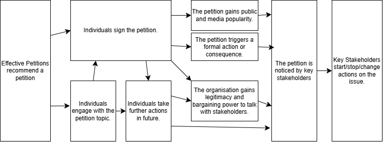

Aiming to find and share petitions with the best chance of creating outsized positive impact.
Calls for a general prohibition on the development of superintelligence until conditions are met.
Join 800+ experts — including Nobel Prize winners, former U.S. military leaders, AI researchers, and public figures - in a call to ban the development of superintelligence.
Aims to encourage US states to adopt legislation banning 'gain of function' biological research, based on laws in Florida.
Encourages the UK Government to ban factory farming in the UK.
Aims to ban the sale of Frankenchickens - rapidly growing chicken breeds which suffer significantly - from various UK supermarket chains.
Ecourages the USDA to prohibit eyestalk ablation - the cutting of shrimp's eyestalks to speed up their reproductive cycle.
Calls on the governments of Spain, the UK, and the European Union to ban octopus farming.
Demands that the first proposed commerical octopus farm is not opened, and the practice of octopus farming is banned.
Urges the UK government to increase FSA funding to speed up cultivated meat production.
Calls on central and devolved UK Governments to guarantee a vegan option on every menu in settings such as hospitals, schools, and universities.
We select recommended petitions based on three key criteria, each with sub-questions:
Here's our current thoughts on how Effective Petitions (and petitions in general) create change.
